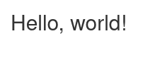

5.3. Public and private Shiny servers¶
Users of the Esrum cluster have two options for running Shiny servers: Either via a publicly accessible server for non-GDPR project/non-confidential data or by running Shiny directly or through Rstudio on data in access controlled projects.
5.3.1. The public Shiny server¶
Warning
DO NOT put any GDPR projected or otherwise confidential data in your
SUN-CBMR-shinyapp sub-folders, as these folders are publicly
accessible. Files and folders in SUN-CBMR-shinyapp are
additionally writable by all users with the access to the folder.
KU-IT makes a public Shiny server available at
https://shinyapp01.ku.dk/cbmr/. This server is accessible to everyone
inside and outside KU. To make use of this service, you must first apply
for access to the N-SUN-CBMR-shinyapp-R and the
N-SUN-CBMR-shinyapp-W as described on the
Applying for access page.
Once you have been given access to these groups, you can access the
SUN-CBMR-shinyapp at ~/ucph/ndir/SUN-CBMR-shinyapp/. If you
cannot access the ndir folder, then please see the
Troubleshooting section on the
Connecting to the cluster page.
It is strongly recommended that you create a folder with your username:
$ mkdir -p ~/ucph/ndir/SUN-CBMR-shinyapp/$USER
This creates a folder with your username and adds a shortcut to your
home folder named shiny. To verify that everything is working
correctly, create a file name app.R in
~/ucph/ndir/SUN-CBMR-shinyapp/$USER with the following content:
library(shiny)
# Define UI ----
ui <- fluidPage(
titlePanel("Hello, world!"),
)
# Define server logic ----
server <- function(input, output) {
}
# Run the app ----
shinyApp(ui = ui, server = server)
Then visit https://shinyapp01.ku.dk/cbmr/ and click on the folder corresponding to your username, and you should see the following in your browser:
